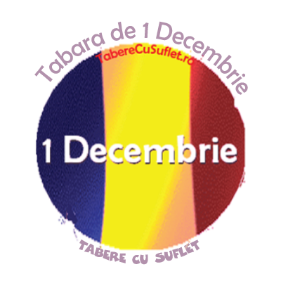

Cand? 28 nov - 1 dec 2026
Unde? Vom sta la Pensiunea Casa Noastra sau la Vila Tabere cu Suflet din Sinaia.
Ce facem? Activitatile din Tabara de 1 Decembrie sunt alese functie de conditiile meteo si sunt pline de diversitate:)
Daca zeii zapezii vor fi alaturi de noi, ne propunem sa deschidem sezonul de Schi si Snowboard si sa schiem sau sa ne dam cu placa la Cota 2000, la Azuga, sau in alta statiune cu mai multa zapada naturala sau artificiala!
In cazul in care vremea nu ne permite sa mergem la schi, avem in vedere mai multe activitati pe care le-am facut de-a lungul anilor:
Varsta recomandata: 7-16 ani
Cat costa? Contributia pentru aceasta tabara este de 380 Euro.
In cazul in care doriti sa participati insa, din diferite motive, nu puteti acoperi aceasta contributie, va rugam sa ne spuneti si va ajutam cu drag prin programele WeCare. Mai multe detalii
Ce asiguram? Cazare pensiune 3*, 3 mese /zi, gustari, supraveghere copii si, nu in ultimul rand, Povesti din Tabere cu Suflet, impreuna cu multa pasiune si dedicare:) Transportul din Bucuresti este oferit de Asociatia Tabere cu Suflet in limita locurilor din microbuz.
Cum rezerv? Rezervarea devine ferma dupa plata unui avans de minim 750 lei. Avansul este nereturnabil. Plata se poate face cash sau in Contul Asociatiei.
La detalii plata va rugam sa treceti "Contract Sponsorizare".
Dupa ce faceti plata, va rugam sa ne confirmati printr-un simplu email.
Contractul se gaseste aici. Pentru validarea inscrierii, va rugam sa il completati si sa ni-l transmiteti.
Reduceri: Membrii Asociatiei Tabere cu Suflet pot beneficia de reducere 20% la aceasta tabara prin programul Prietenii Tabere cu Suflet. Mai multe detalii
De asemenea, functie de momentul platii, se acorda diferite reduceri suplimentare:
Nu mai pot veni: In cazul mai putin fericit in care nu mai puteti veni in Tabara, prin activarea Optiunii Nu-Mai-Pot-Veni contributia se poate recupera integral. Mai multe detalii
Sa ne cunoastem: Tabere cu Suflet este o Familie extinsa, in care impartasim aceleasi Valori. Ne-ar face placere sa facem cunostinta inainte de tabara si sa va povestim despre aceste Valori:)
In plus, Tabara nu poate avea loc fara Incredere, de aceea este important sa ne cunoastem si sa construim impreuna Puntea Increderii. Pentru a facilita acest lucru am creat mai multe oportunitati. Mai multe detalii
Asociatia Tabere cu Suflet: Aceasta tabara este deschisa exclusiv pentru membrii Asociatiei Tabere cu Suflet.
Daca nu sunteti membru si doriti sa deveniti, va rugam sa consultati Conditiile de Aderare, apoi sa completati Formularul de Inscriere si sa semnati Cererea de Adeziune.
WeCare Daca doriti sa veniti insa nu puteti acoperi contributia, va rugam sa ne spuneti si va ajutam cu drag. Mai multe detalii
De asemenea, prin achitarea integrala a costului taberelor, ajutati un copil fara posibilitati materiale sa vina gratuit in tabere! 10% din costul total al taberei este directionat catre programul WeCare Zambet pentru toti Copiii, prin care oferim ajutor copiilor defavorizati. Mai multe detalii